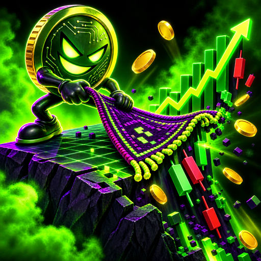

Rug Pull: Crypto Tycoon
Launch your own coin, then decide whether to make it real or run.
Trade your way out of a basement, launch your own coin, then face the only question the game actually cares about: do you build the thing you promised, or take the money and run. Either answer keeps the game going. That is the point. There is no ending screen where you get away with it, because your name follows you into the next cycle and the people you burned remember. The loop runs weekly: pick projects, resolve them, watch the cycle reset and see who is still willing to talk to you. Built in Godot for Android, portrait, with a prologue, a coin launch, and both the build and the rug as fully implemented resolutions.
Dev log //
Young and moving fast: prologue, coin launch, weekly project loop and both endings are in. The art is deliberately not in the repository, it is generated locally from a licensed pack that cannot be redistributed.
- Replace GitHub Actions with a local pre-push hook, fix the renderer feature tag
The 1 most recent changes worth reading, out of 10 commits.
Every line above is a real commit from this app's repository, on the date it was made. Build chores, merges and internal housekeeping are filtered out.